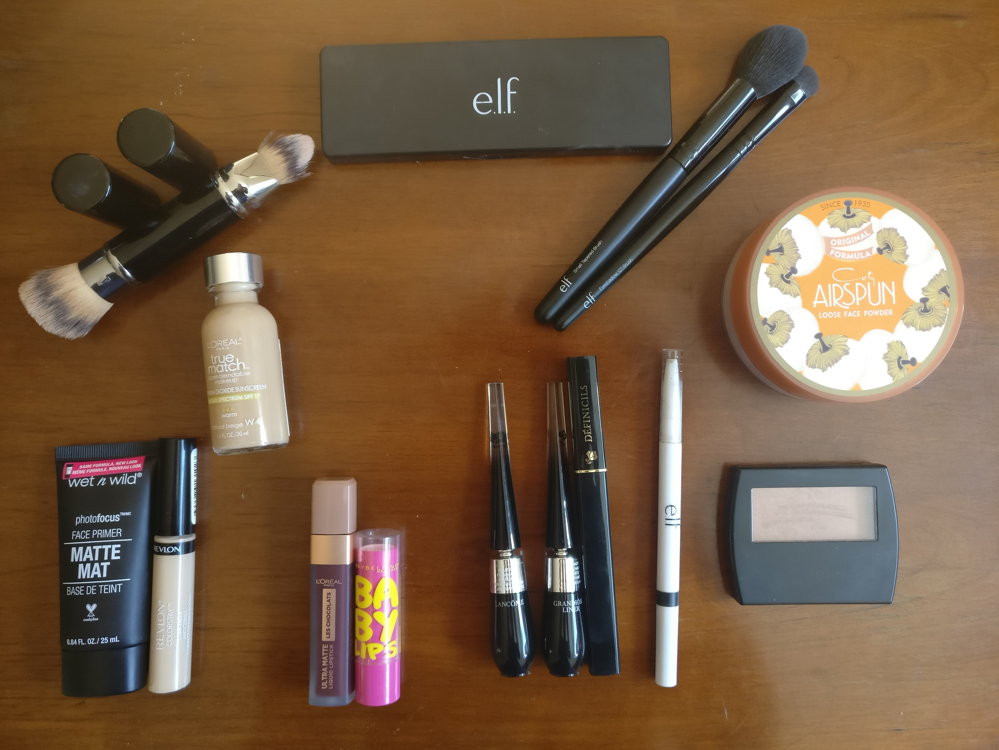
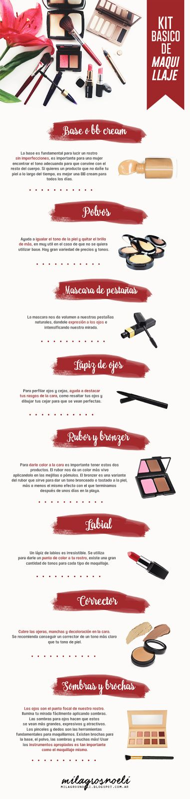

My Makeup 💋

Los productos que utilizo son los siguientes (les dejaré una opcion de compra junto con los productos)
- Brocha dual Face Secrets Brocha 1 Brocha 2
- Maquillaje True Match de L´OREAL (tono w4)
- Paleta para ojos Mad for Matte de e.l.f.
- Brocha para polvos
- Brocha para sombras de ojos
- Polvo translucido
- Primer de Wet & Wild
- Corrector Revlon
- Labial Les Chocolats L´OREAL
- Bálsamo Baby Lips de Maybelline
- Delineador café y negro Grandiose Liner Lancome
- Máscara de pestañas Définicils de Lancome
- Lápiz para ceja e.l.f.
- Rubor bronceador e.l.f. sunkissed bronzer
- Barra para contouring de NYX
Estos son los productos que yo utilizo para mi maquillaje de diario, sin embargo los productos pueden llegar a variar dependiendo de las marcas que más te gusten. Yo incluso cambio de productos de vez en cuando para experimentar y ver cuáles me sirven mejor, por lo que te recomiendo que hagas lo mismo. No soy experta en maquillaje pero si yo pude aprender creo que cualquiera puede, solamente es cuestion de practicar.
Aqui les dejo la lista de los productos básicos que debes tener :
- Crema humectante y primer (fijador)
- Corrector y base de maquillaje
- Polvo translúcido
- Lápiz para cejas
- Delineador y máscara de pestañas
- Bálsamo labial y labial
- Brochas
- Rubor, iluminador y contour
- Paleta de sombras
- Hisopos o toallitas desmaquillantes
Este es un ejemplo general de lo que debes tener (la imagen la tome de https://www.pinterest.com.mx/pin/41939840259500013/) :

Espero les sirvan estos básicos de maquillaje y prometo que pronto les tendré reseñas y tutoriales.
Si les gustó compártanlo con sus amigos en sus redes sociales.
Mis Herramientas de trabajo
Laptop: Acer Aspire R15 Convertible
Cámara: Nikon D5300
Celular: Oneplus 3T